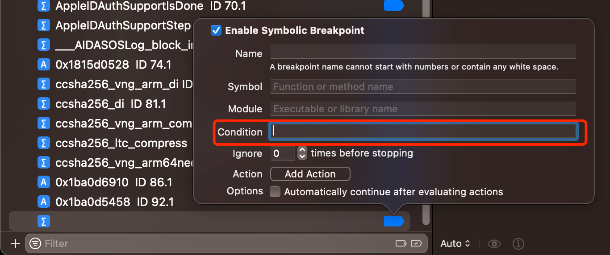
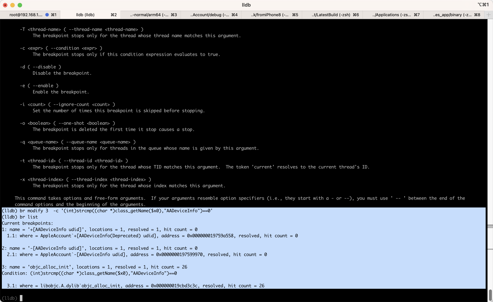

条件判断
带条件判断的断点=conditional breakpoint= 给普通的断点，加上条件判断- 条件判断添加方式
- Xcode图形界面：断点的
Condition中加上判断语句=表达式=expression=expr- 
- lldb命令行：加断点时，加上
-c <expr>==--condition <expr>- 语法
breakpoint set --name <function_name> -c <expr>- 说明
-c <expr>- 特殊：如果
<expr>中包含双引号"，则最外层用单引号'- 举例
br s -n "objc_alloc_init" -c '(bool)[NSStringFromClass($x0) isEqualToString: @"AADeviceInfo"]'
- 举例
- 特殊：如果
- 参数引用
$x0：引用寄存器x0的值
- 说明
- 语法
- Xcode图形界面：断点的
- 引用值 = 条件判断的断点中引用对应的值的写法
- 寄存器：
$x0、$x1、$x2等等- 适用于：任何地方，包括普通函数和某个地址(某行汇编代码)
- 参数：第一个参数：
$arg1、第二个参数：$arg2、第三个参数：$arg3，等等- 适用于：普通函数（才有参数）
- 寄存器：
- 条件判断添加方式
更改判断条件
如果之前已给断点加了条件判断，而想要去更改条件：
- Xcode图形界面：右键某断点-》
Edit Breakpoint-》直接修改Condition的值即可 - lldb命令行
- 核心思路：用
br modify -c <new_expr>
- 核心思路：用
lldb中更改条件判断
举例说明：
lldb命令行中，之前加了带条件判断的断点：
br s -n "objc_alloc_init" -c '(bool)[NSStringFromClass($x0) isEqualToString: @"AADeviceInfo"]'
加了后，对应的断点编号是：3
(lldb) br list
...
3: name = 'objc_alloc_init', locations = 1, resolved = 1, hit count = 19
Condition: (bool)[NSStringFromClass($x0) isEqualToString: @"AADeviceInfo"]
3.1: where = libobjc.A.dylib`objc_alloc_init, address = 0x000000019cbd3c3c, resolved, hit count = 19
此处：想要修改该断点的condition条件判断
具体写法是：用modify
br modify 3 -c '(int)strcmp((char *)class_getName($x0),"AADeviceInfo")==0'
修改后，再去查看，即可看到：
(lldb) br list
...
3: name = 'objc_alloc_init', locations = 1, resolved = 1, hit count = 26
Condition: (int)strcmp((char *)class_getName($x0),"AADeviceInfo")==0
3.1: where = libobjc.A.dylib`objc_alloc_init, address = 0x000000019cbd3c3c, resolved, hit count = 26
- condition已经变成新设置的条件了：
Condition: (int)strcmp((char *)class_getName($x0),"AADeviceInfo")==0
